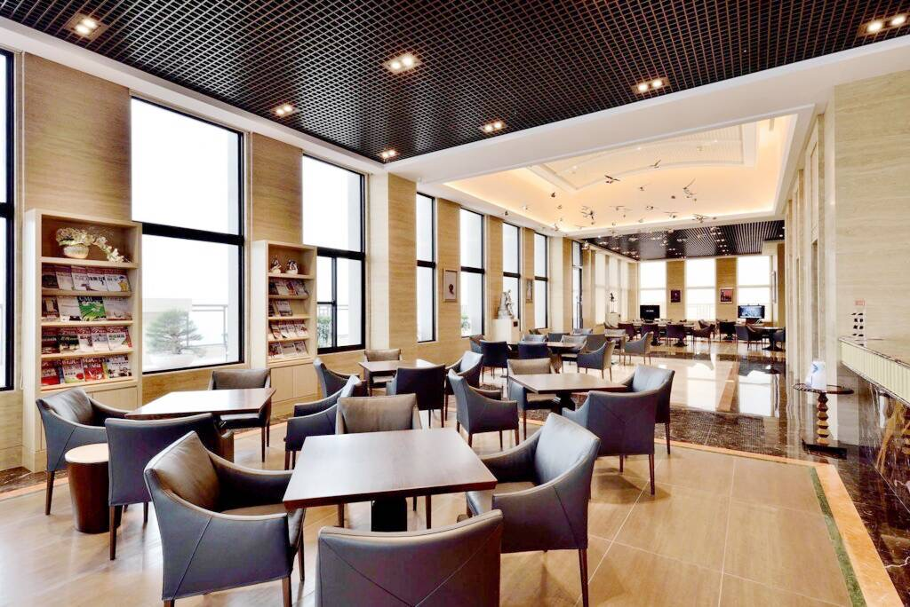
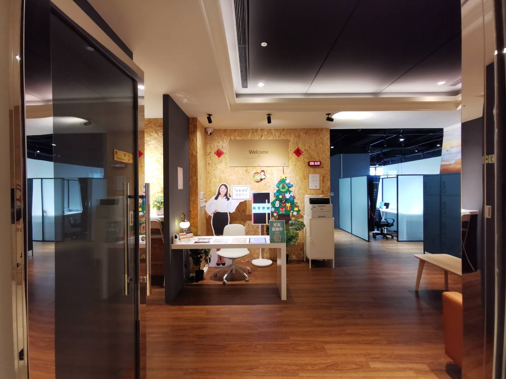
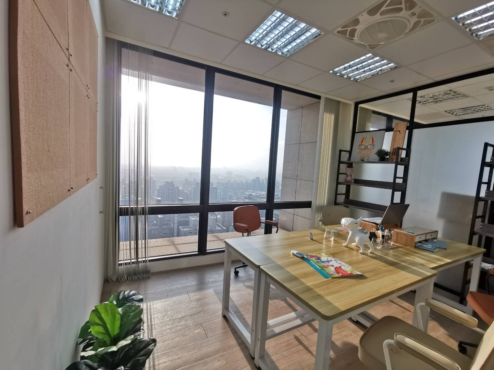

桃園公司借址登記
以桃園區商務地址辦理符合條件的公司登記，地址使用文件、適用業別及方案由專人說明。了解借址登記服務
Professional Support
依照企業不同階段，選擇所需的空間與行政支援。
以桃園區商務地址辦理符合條件的公司登記，地址使用文件、適用業別及方案由專人說明。了解借址登記服務
不需負擔完整辦公室成本，也能保有穩定的商務聯絡據點。
提供會談、提案與客戶接待所需的專業商務空間。
💡 客戶快到了，在哪裡接待？！ 由小睿帶您 15 秒了解桃園 25 樓景觀會議室接待方案。
協助接收企業信件與包裹，讓重要資訊不因移動辦公而遺漏。
Made for Business
控制初期固定成本，同時維持專業且可信任的企業形象。
💡 公司還沒租辦公室，事情可以先開始嗎？ 桃園借址登記＋虛擬辦公室，讓業務立即起跑。
在桃園建立彈性據點，依業務需求使用空間與行政服務。
需要桃園商務聯絡據點時，先由專人釐清實際需求與適用方案。
在會議、洽談與階段性辦公需求之間保有彈性。
The Space
從接待、會議到日常辦公，實際空間為每一次商務往來提供合宜的場景。



FAQ
新創、SOHO、中小企業及希望在桃園設立商務據點的團隊，可先了解登記地址服務；能否申請仍須依公司類型、產業及實際地址條件確認。
建議先確認公司型態、預計營業項目、地址使用文件、信件與公文代收方式，以及租期與費用。實際適用條件與文件請向睿勤服務人員確認。
睿勤對外公告的長期優惠方案為 NT$1,000／月起，適用五年期方案；短期方案價格不同。是否適用此優惠及正式費用，以服務人員最新報價和合約為準。
可先透過 LINE 或電話告知日期、人數與用途，由服務人員確認當日空間與方案。
可加入 LINE 官方帳號 @richspace、致電 03-3255191，或寄信至 service@richspace.com.tw。